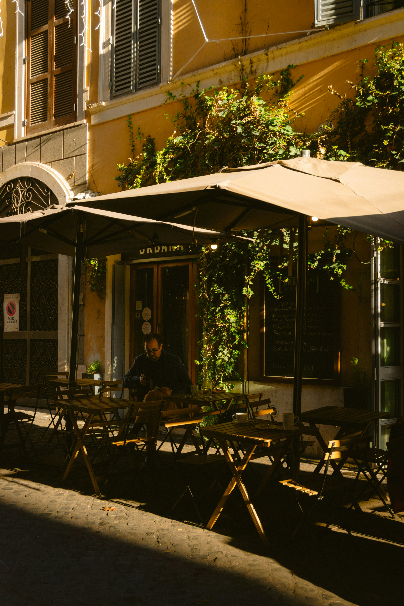

Destaque da Semana: Nosso Pappardelle
Massa fresca feita manualmente todos os dias, servida com molho de tomates rústicos e manjericão fresco muito parmesão. Uma receita inesquecível transmitida por gerações.

Há mais de três gerações, nossa família preserva receitas italianas tradicionais, preparadas com ingredientes frescos e o mesmo carinho das refeições compartilhadas à mesa da nonna.
Um ambiente familiar accogliente, para que você se sinta em casa.

Massa fresca feita manualmente todos os dias, servida com molho de tomates rústicos e manjericão fresco muito parmesão. Uma receita inesquecível transmitida por gerações.
| Pratos | Ingredientes | Preços |
|---|---|---|
| Pappardelle al Pomodoro | Tomates rústicos, manjericão, parmesão | R$ 54,00 |
| Lasagna Tradizionale | Bolonhesa artesanal, mussarela, molho bechamel | R$ 62,00 |
| Carbonara com Ancho Grelhado | Ovo, guanciale, parmesão | R$ 95,00 |